Premiere Pro 是 Adobe 推出的一款功能强大的视频编辑软件。
在使用 Pr 进行创作之前，要事先准备好素材，并且为便于管理，还应该把所有素材放到同一个文件夹下。为此，在桌面创建文件夹 test，在里面放置一些图片素材和视频素材。
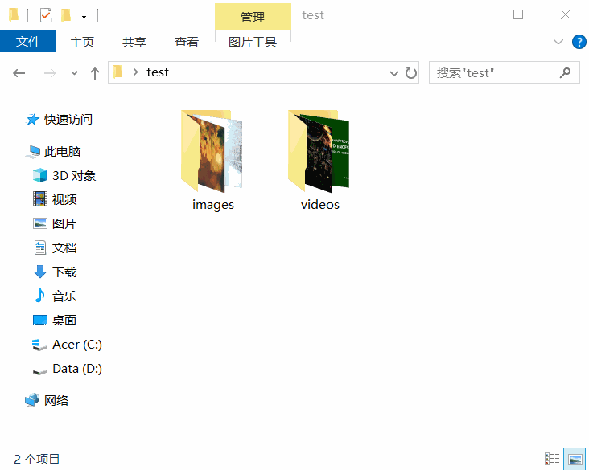
新建项目
使用 Pr 的第一步，是创建一个扩展名为 .prproj 的文件，后续的操作都将记录在这个文件中，建议把这个文件和素材放在同一文件夹下。
菜单栏 > 文件 > 新建 > 项目，下图表示在文件夹 test 中创建文件 未命名.prproj
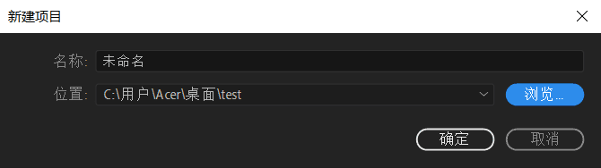
导入素材
要在 Pr 中使用这些素材，要将素材导入，这样 Pr 才知道有哪些素材可以用。导入的素材会罗列在 项目面板 中。项目面板默认位于左下角。
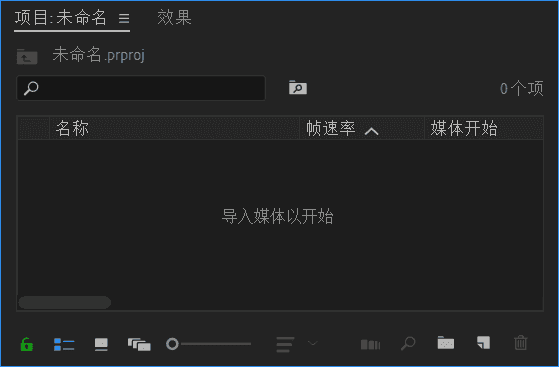
菜单栏 > 文件 > 导入，或者在项目面板中间的空白处双击，就可以开始导入素材。
当然，也可以通过拖拽的方式导入素材，只须将素材拖拽到项目面板。
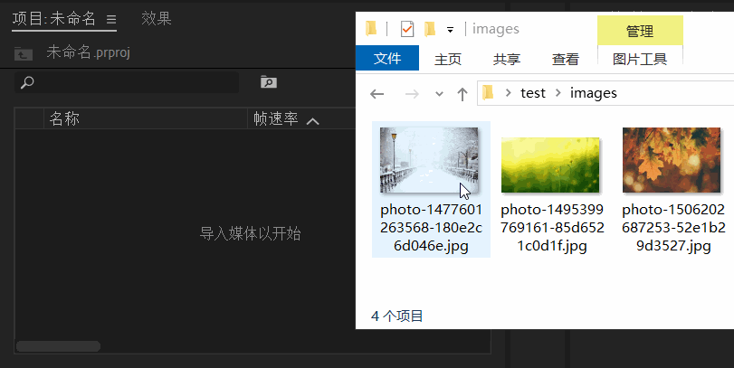
管理素材
素材在项目面板中呈现的名称可以修改，文件名不会跟着改变。
先选中素材，再单击名称，就可以编辑素材的名称。下面将一个素材的名称修改为 spring
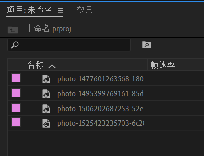
下列操作作用同上：
- 选中素材 > 鼠标右键 > 重命名
- 选中素材 > 菜单栏 > 剪辑 > 重命名
可以对素材进行分类，如同把不同类型的文件放到不同的文件夹一样，素材可以放到 素材箱 中。单击项目面板右下角的「新建素材箱」按钮，就可以创建一个素材箱。
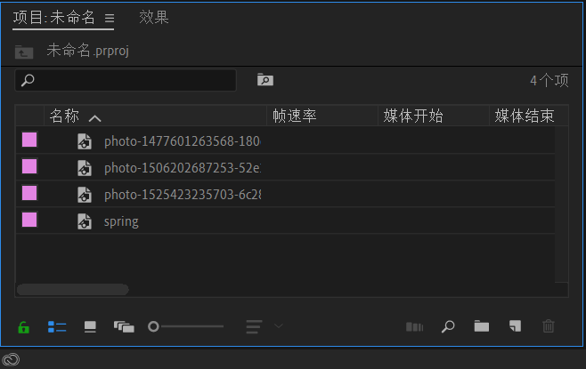
下列操作作用同上：
- 在项目面板中间的空白处 > 鼠标右键 > 新建素材箱
预览素材
在 Pr 中，素材又称为 源，在 源监视器 中可以打开素材。
单击素材的名称，拖拽到源监视器中，就可以在源监视器中打开。
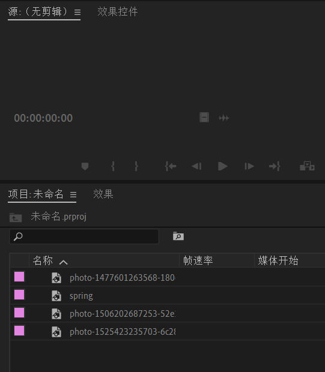
下列操作作用同上：
- 选中素材 > 在素材名称以外区域双击
- 选中素材 > 鼠标右键 > 在源监视器中打开
使用源监视器时，可以使用下列按键来控制视频的播放：
- 按 J 倒放，倒放时再按 J 快退
- 按 K 暂停
- 按 L 播放，播放时再按 L 快进
小结：
- 项目面板列出了所有素材，以及后续操作产生的所有文件。
- 可以在源监视器中预览素材。
新建序列
简单地说，剪辑就是把素材修剪后，再拼接起来。显然，这种拼接是有序的，而不是杂乱无章的。这将形成一个 序列。下面要做的是将两个视频拼接起来。
拼接操作在 时间轴面板 中进行，只需将素材拖拽到时间轴面板中。
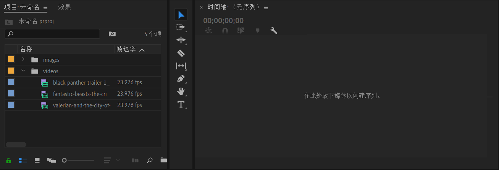
可以发现，在把第一个素材拖过去后，项目面板中就多出了一项，这就是对应的序列。现在，它就是前面所做操作（拼接）的成果。
实际上，在把第一个素材拖过去时，Pr 做了两个动作：
- 新建一个空白的序列。
- 放置第一个素材。
在这里，序列是由 Pr 根据放入的素材自动创建的，因此分辨率、帧速率和采样率等参数都和第一个素材一致。
也可以通过拖拽的方式，将正在源监视器中预览的素材放入序列中。
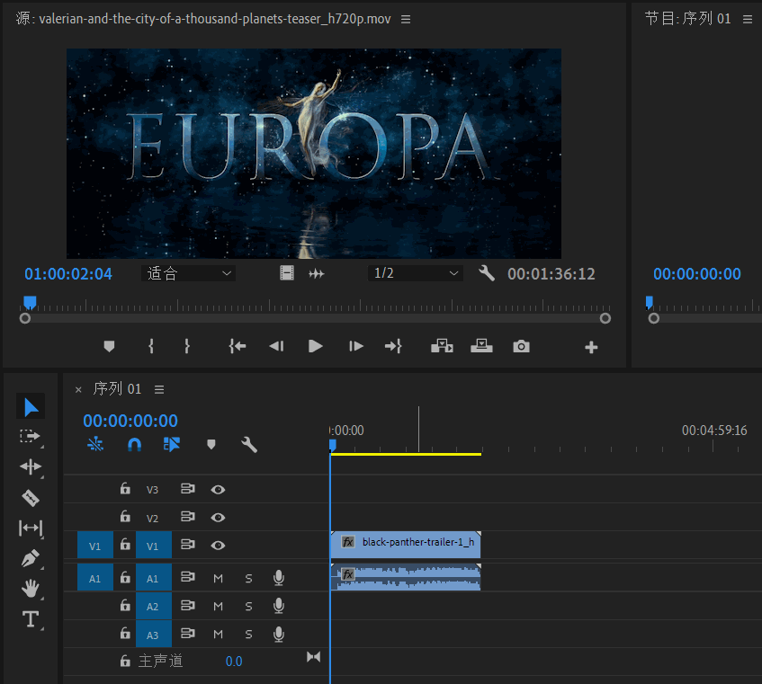
管理序列
下面将前面得到的序列在项目面板中对应的条目重命名为 序列 01 并移出 videos 素材箱。
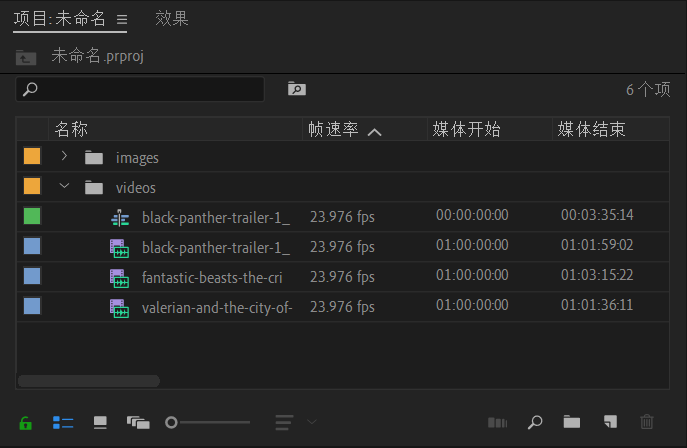
时间轴面板就是用来编辑序列的面板。在需要编辑的序列上双击，就可以在时间轴内打开。面板的标题就是当前打开的序列名称。可以同时打开多个序列，也可以逐个关闭。
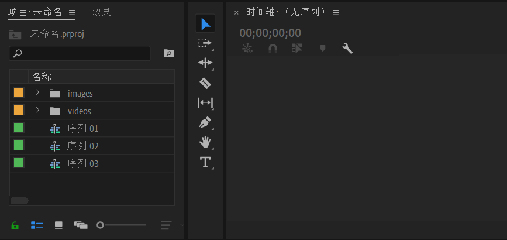
下列操作作用同上：
- 选中序列 > 鼠标右键 > 在时间轴内打开
预览序列
节目监视器 用来预览序列的最终效果。其实，序列在时间轴内打开的同时，也会在节目监视器中打开，并且节目监视器和时间轴的光标是同步的。
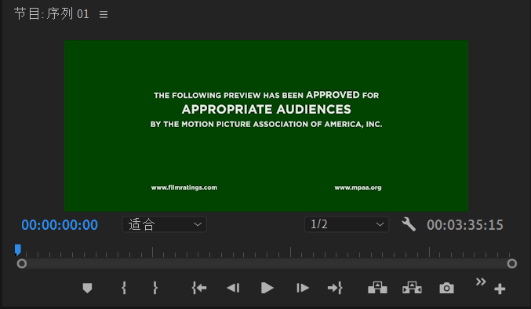
导出媒体
最终的成果应该是一个普通的视频文件，如 .mp4 格式的文件，以便在一般的视频播放器中播放。得到一个序列后，需要 导出媒体，来得到一个普通的视频文件。
选中序列 > 鼠标右键 > 导出媒体，这将弹出一个对话框。在这个对话框的左侧，切换到「源」看到的是序列，切换到「输出」看到的是最终的效果。
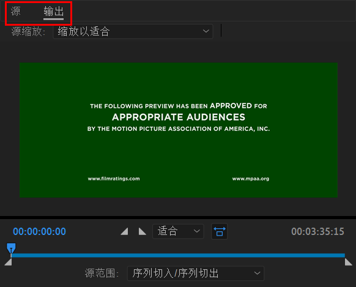
右侧提供了一些参数设置，如果想要得到一个 mp4 文件，格式应该选择 H.264
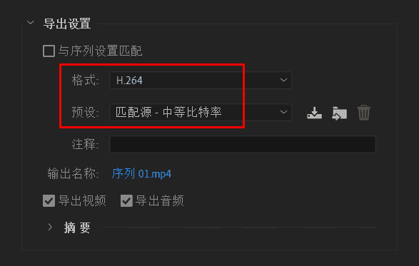
预设一般选择 匹配源 - 中等比特率，这会影响文件的大小，在底部可以看到估算值。
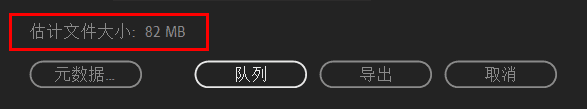
可以分别决定是否要包含画面和声音。
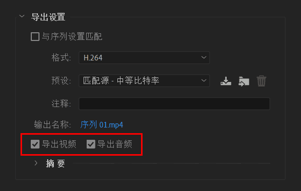
也可以直接勾选「与序列设置匹配」，这样就不需要再设定其他参数。
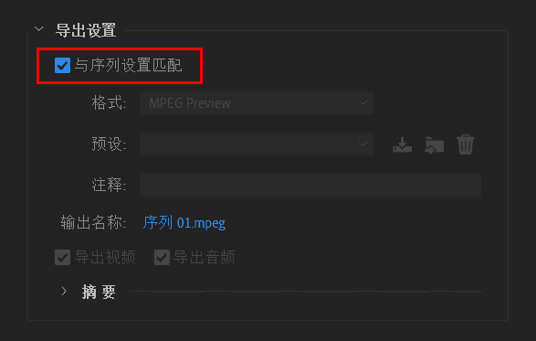
单击「输出名称」，可以设定导出的位置和文件名。
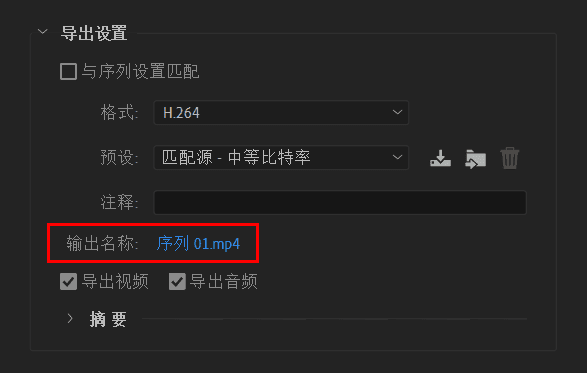
最后单击「导出」按钮，开始导出。
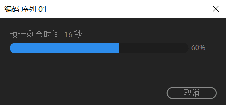
剪辑的入点、出点
通常只需要素材的一小段，这一小段的起点称为 入点，终点称为 出点。在源监视器中预览素材时，就可以设定入点、出点。
将光标定位到入点，单击底部的「标记入点」按钮设定入点；将光标定位到出点，单击底部的「标记出点」按钮设定出点。
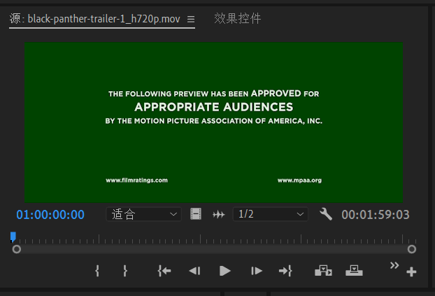
此时若将其拖拽到时间轴，就只有入点到出点之间的片段会加入到序列中去。
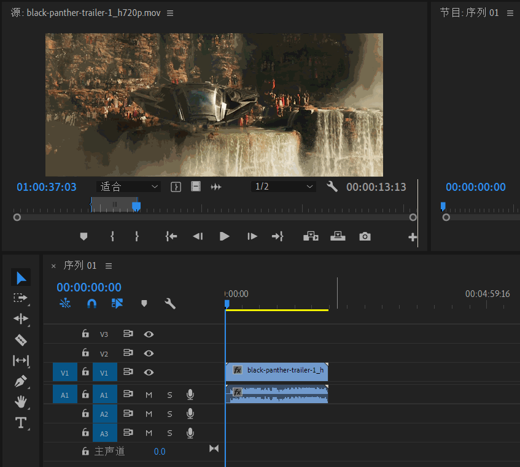
素材在使用前一般都要经过简单地修剪，为了和硬盘上实实在在的文件区分开来，一般把和某个素材对应的条目，称为 剪辑。例如，通过导入而罗列在项目面板中的素材，这些「剪辑」都是完整的素材；而上面放入序列的「剪辑」则是片段，不是完整的素材。
如果没有设定入点、出点，那么剪辑的入点就是素材的开头，剪辑的出点就是素材的结尾，并且会有相应的白色的三角形标记。
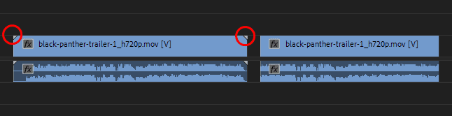
Licence: CC BY-NC-ND 4.0